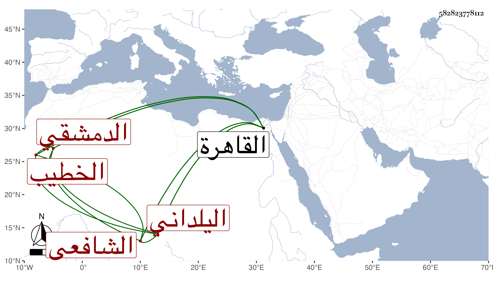

0902Sakhawi.DawLamic.ITO20230111-ara1.EIS1600.582823778112
Biography ID: 582823778112
372
محمد بن محمد بن علي بن أبي بكر بن يوسف بن علي الشمس اليلداني الدمشقي الشافعي الخطيب والد محمد الآتي . ولد في العشر الأخير من شوال سنة أربع عشرة وثمانمائة واشتغل في بلده عند العلاء بن الصيرفي والشمس محمد بن سعد وسمع على الفخر عثمان بن الصلف في آخرين وخطب بالنابتية تلقاها عن أبيه المتلقي لها أيضا عن أبيه عن التدمري واقفها ، وتكسب بالشهادة ثم قدم القاهرة في جمادى الثانية سنة ثمان وثلاثين ثم في سادس صفر سنة تسع وأربعين فقرأ على شيخنا البخاري ولازمه في سماع المقدمة وغيرها وكتب عنه في الأمالي وحصل جملة من الفوائد وناب عنه في الخطابة بجامع عمرو يوم عيد ، وكان ناقص الفضيلة قريب الحال من بعض الوعاظ جهوري الصوت بالخطابة والقراءة مع سرعتها وسرعة الكتابة . مات في تاسع رجب سنة سبع وخمسين بالقاهرة وكان قدمها لتركة أمه فلم يلبث أن توعك ومات بعد شهر ودفن بمقبرة بالقرب من تربة الطويل رحمه الله وإيانا .
